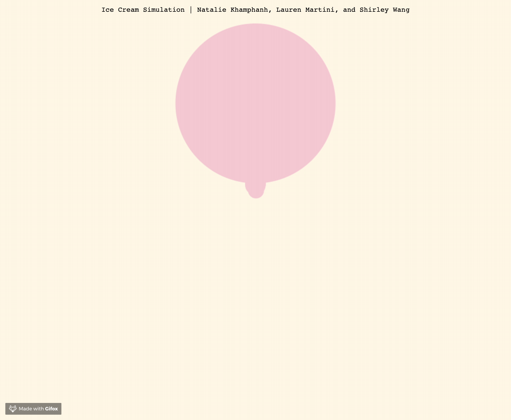

Progress So Far
About our proposal...
After receiving feedback on our project proposal, we realized we had to modify our project and narrow it down to smaller goals. Initially, we wanted to create a real-time 3D simulation with OpenGL and implement a particle system and integrate features such as heat. Instead, we have decided to try and simulate melting ice cream using WebGL and Javascript, specifically with the library THREE.js.
As of now, we are not trying to incorporate ice cream melting by temperature, adding any toppings, or any other fun features. Our main focus is to create a simulation that realistically and aesthetically mimics ice cream that melts.
What We Did & Member Contributions
Our group decided to experiment on our own with numerous different approaches to simulate the melting of ice cream.
Shirley : In my experimentation, I explored particle systems and texture mapping using the THREE.js library. During our brainstorming and researching stage, we researched a lot about fluid simulation. Because many sample projects used a particle system, I tried to create a particle system that would simulate the melting motion we desired. However, I came across a lot of difficulties, as I was unsure what would be the best or realistic way to implement the particle interaction. In the simulation above, I was able to achieve a downward drip motion of the ice cream scoop, but the ice cream scoop itself is static. Moving forward, my team hopes to explore using a vertex shader to distort the ice cream scoop mesh and keep the current particle system to simulate simple drips. As for the texture mapping, it was an exciting (but frustrating) process to get textures to work. We are happy with the textures we have so far, but we hope to refine it to be more realistic and tweak the lighting for a cleaner blinn-phong shade.

Natalie : For my attempt at our ice cream simulation, I tried to implement a simple particle simulation that is supposed to look as if the particles are dripping. This was done by slowing the rate at which the particle falls by a random displacement multiplied by a certain speed dependent on the height of the particle. I also tried looking into making a sphere out of a bunch of particles in order to create an initial ice cream scoop shape out of particles that would eventually melt. I looked into numerous resources about having a random uniform distribution of particles around a sphere and trying to use the randomPointsInGeometry function found in the THREE.js extension. Sadly, I did not have any luck when trying to implement them.

Lauren : For my attempt to simulate ice cream, I discovered a technique that uses vertex animation/manipulation. I created basic sphere geometry with a decent poly count and then used a THREE.js extension written by Jerome Etienne (https://tinyurl.com/y3os6mhd) to do the vertex animation. I animated the vertices in the negative y direction so that they would "melt". When they reached the minimum y value, they would spread out. This would create a liquid filling up the screen effect. However, I feel that I still must not have a high enough poly count as the sphere smooshes down as one single mass without drips. I planned to add particles over this that would drip individually but was unable to implement that part yet. Lastly, I added Shirley's displacement textures for the scoop of ice cream just for visual style.
Accomplishments
- 🍦Texture mapping, applying shaders to the ice cream and cone.
- 🍦Simple simulation of particles moving or dripping from the ice cream.